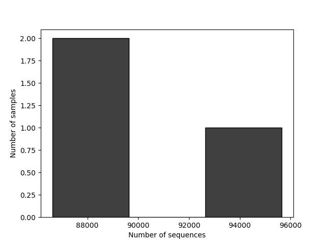

Demultiplexed sequence counts summary
forward reads
reverse reads
Minimum
86614
86614
Median
87817.0
87817.0
Mean
90031.666667
90031.666667
Maximum
95664
95664
Total
270095
270095
Forward Reads Frequency Histogram

Download as PDF
Reverse Reads Frequency Histogram
Download as PDF
Per-sample sequence counts
Total Samples: 3 (forward) 3 (reverse)
forward sequence count
reverse sequence count
sample ID
a1
95664
95664
a3
87817
87817
a2
86614
86614
Download as TSV